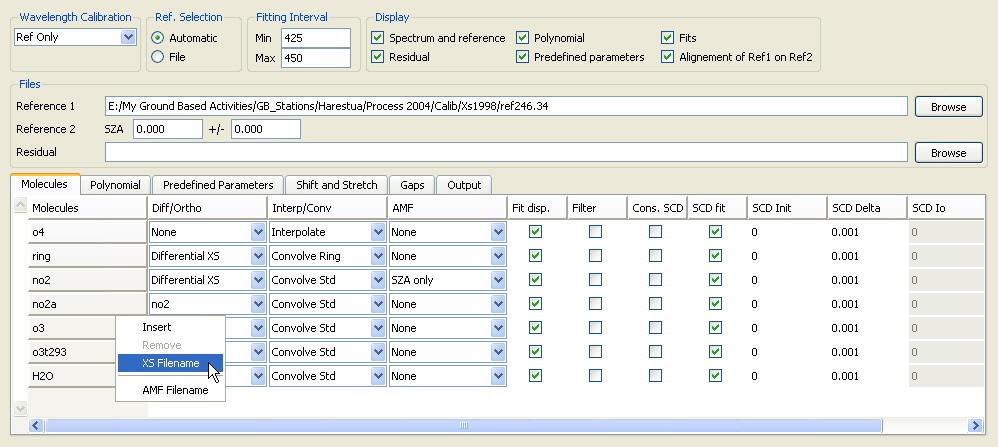

QDOAS Analysis Windows properties

This dialog box completes the Projects properties for the configuration of the analysis of spectra. Several analysis windows can be defined under a same project.
The fitting interval is the first option to specify when a new analysis window is created. It depends on the region covered by the spectrometer and the trace gases to retrieve. According to the molecules to focus on, some baseline recommendations can be found in the literature.
In the DOAS technique, spectra are always analyzed with respect to a reference spectrum (also called, control spectrum). This could be the irradiance spectrum of the current satellite file, any other reference spectrum provided in an ASCII file or a daily reference spectrum selected on a solar zenith angle criterion. The Ref. Selection box proposes to choose between the modes File (irradiance of the file for satellites measurements or an external reference spectrum) and Automatic (daily reference spectrum).
In addition, QDOAS gives the possibility to define two reference spectra (Reference 1 and Reference 2). Reference 1 is always a file; according to the Ref. Selection mode, Reference 2 can be the name of an ASCII file or a spectrum automatically selected by the program. These options determines on which reference spectrum the wavelength calibration procedure is applied :
- If only one reference spectrum is specified (Reference 1 or Reference 2), it is used as control spectrum i.e. the I0 spectrum in the Beer‑Lambert law. The wavelength calibration procedure is applied on this spectrum and the cross-sections are re-interpolated on the new calculated grid before the analysis of spectra.
- If two reference spectra are given, the wavelength calibration is applied only on the first one (Reference 1); the shift between both reference spectra is then determined (using a NLLS fitting approach) in order to align cross-sections on the second reference spectrum (Reference 2) and spectra are analysed w.r.t. Reference 2.
The information on the solar zenith angle is present in most ground-based file formats. According to the SZA range, a reference spectrum with the SZA the closest to the given value is selected for each twilight or the spectrum with the minimum SZA of the day is selected (both values initialized to 0 or the SZA range below all SZA values of the file).
For MAXDOAS measurements, it is also possible to select the zenith spectrum of the scan. Currently, Scans/SZA radio buttons appear to make this selection possible with the CCD EEV, MFC STD, MFC BIRA and ASCII formats. If this option is necessary for other file formats, please, contact authors.
For satellite measurements, if no Reference 1 is specified (field kept empty), the irradiance of the current file is always implicitely used. This means that if a Reference 2 is provided, the wavelength calibration is applied on the irradiance spectrum (Reference 1) of the file and the control spectrum (Reference 2) will be aligned on the irradiance before the analysis of earthshine spectra. For satellite measurements, the Reference 2 spectrum could be an average of spectra selected in a specific region given by its minimum and maximum latitudes and longitudes. Other information such as the cloud fraction (GOME2) could also be used to refine the reference selection.
The quality of the fit results largely relies on a very accurate determination of the wavelength calibration of the reference spectrum. The wavelength calibration procedure developed in QDOAS allows correcting the preliminary grid of the reference spectrum using a high-resolution solar atlas spectrum degraded to the resolution of the instrument (see the Calibration page of Projects Properties). The information on the shift and eventually the slit function retrieved from this procedure are used to convolve/interpolate the cross-sections before the analysis. The wavelength calibration is always applied in priority on the Reference 1 (the irradiance spectrum for satellite measurements). If two reference spectra are provided, Reference 2 is aligned on Reference 1 using the same non linear least-square algorithm as the one used for the analysis of spectra w.r.t. the control spectrum.
If the wavelength calibration of the reference spectrum is assumed to be accurate enough, the option None can be used instead of Ref Only. The option Spectra only is useful for some particular applications (for example, long paths measurements for which the reference spectrum is a lamp measurement).
The option Ref+spectra allows applying a calibration correction on both reference spectrum and spectra to analyze. This option has been designed to handle spectra recorded with unstable (unthermostated) instruments where the spectral resolution can vary a lot from one spectrum to another. In this case, the resolutions of both spectra are matched to the resolution of the less resolved spectrum, and the absorption cross-sections can be convolved in real-time to the same effective resolution. This option is time consuming and should be used carefully.
After the processing of a spectrum, QDOAS can plot for each spectral analysis window :
- the spectrum and the reference in the fitting interval;
- the residual of the fit (the difference between the observed and the calculated);
- the continuum part of the spectrum fitted by a polynomial;
- the fit obtained for each species
- the predefined parameters (offset, undersampling);
- in the case two reference spectra have been selected, these two spectra after the alignment correction
The appropriate buttons are checked according to the graphs to plot. An individual selection of the cross-sections and the predefined parameters can still be performed in the dedicated tab pages.
In the tips and trick box, it is possible to save some residuals to realize further studies or to create a synthetic cross-section that could be introduced carefully in the fit in case systematic structures are identified. If a « Residual » file name is given, the calculated residuals will be saved in an ASCII file. There is one line per processed record and the three first numbers starting a line are respectively the record number, the solar zenith angle and the decimal time. The first line of the file should be the wavelength calibration. As the fits are always appended, the size of the file could increase significantly and it is recommended to disable this option by emptying the « Residual » file name field when it is not necessary anymore.
The user must define the fitting parameters in the appropriate pages of the property sheet at the bottom of the dialog box. The different pages are :
| Molecules | definition and configuration of the list of cross-sections to fit; |
| Polynomial | specification of the degree of the polynomial fitting the continuous component of the absorbance; |
| Predefined Parameters | this page proposes several predefined parameters such as offset, undersampling … |
| Shift and Stretch | shift and stretch can be applied to any spectral item; |
| Gaps | gaps can be introduced in the fitting window (e.g. to eliminate bad pixels); |
| Output | selection of the calculated columns densities and associated errors to save in the output file. |
According to the associated type of parameters, the selected page proposes several columns of options to fill in, to check or to select from a multiple choice. The conviviality of the analysis parameterisation is enhanced by the use of right-click shortcut menus to handle the lists of items in the different tab pages.